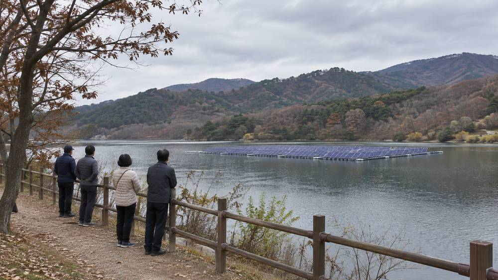

나주호 수상태양광 시행자 "20년간 373억 원 지역 환원"…반대 측은 "둘레길 경관 지켜야"

97.8MW 가운데 19.56MW를 상생 기여분으로, 다도면 주민 1,700명 대상…서산 대호호는 누적 발전수익 53억8,700만 원
전남 나주호 수상태양광 사업 시행자가 발전수익 일부를 20년 동안 지역에 돌려주겠다는 계획을 내놓았지만, 반대 주민들은 경관 훼손을 이유로 원형 보존을 요구하고 있다. 사업은 나주호 수면 803.6㏊의 10%인 80.36㏊에 97.8MW 규모 발전시설을 짓는 것으로, 총사업비는 1,379억 원이다. 시행자 측은 이 가운데 19.56MW를 농어촌 상생발전 기여분으로 정해 20년간 약 373억 원을 지역사회에 환원하고, 그중 80%는 다도면 실거주 주민 1,700명에게 직접 지급하고 20%는 지역발전기금으로 쓰겠다고 밝혔다. 시행자는 이를 1인당 연간 약 108만 원 상당의 혜택이라고 설명하며, 주민 참여 상시 환경 감시와 조사 결과 공개, 사업 종료 뒤 원상복구 계획도 내걸었다. 반대 대책위는 전국에서 손꼽히는 나주호 둘레길의 자연경관과 관광자원이 훼손될 수 있다며 반대하고 있고, 지역에서는 주민이 충분한 정보를 보고 판단할 공론의 장이 필요하다는 목소리도 나온다. 다른 지역에서는 한국농어촌공사가 서산 대호호에 지은 20MW 수상태양광이 4MW 마을발전소를 함께 두고 2025년까지 누적 발전수익 53억8,700만 원을 냈고, 괴산 소수면 길선리는 주민이 직접 운영하는 50㎾ 발전소 수익을 마을발전기금으로 쓰고 있다.
시민에너지 관점
같은 저수지 태양광이라도 주민이 처음부터 지분과 결정권을 가진 곳은 갈등이 적고, 밖에서 짓고 나중에 보상안을 내미는 곳은 오래 다툰다는 것이 국내외 사례의 공통점이다. 1인당 108만 원이라는 숫자도 중요하지만, 나주호 갈등이 9년째 이어진 것은 돈보다 '누가 정하느냐'의 문제였다. 수질과 경관에 대한 걱정은 독립 기관의 조사와 공개로 답해야 하고, 지원금이 아니라 주민이 소유하는 마을발전소 몫을 키우는 쪽이 신뢰를 얻는 길이다. 나주시와 농어촌공사는 찬반 주민이 함께 참여하는 공론화 절차를 먼저 열고, 그 결과에 따라 사업 여부와 규모를 정해야 한다.
출처: KPI뉴스 2026-11-13 강성명 원문 보기
羅州湖の水上太陽光、事業者「20年間で373億ウォンを地域還元」…反対側は「周遊路の景観を守るべき」
97.8MWのうち19.56MWを共生寄与分に、茶道面の住民1,700人が対象…瑞山大湖湖は累計発電収益53億8,700万ウォン
全羅南道の羅州湖水上太陽光事業の事業者が、発電収益の一部を20年間地域に還元する計画を示したが、反対する住民は景観の損傷を理由に原形保存を求めている。事業は羅州湖の水面803.6haの10%にあたる80.36haに97.8MW規模の発電施設を建設するもので、総事業費は1,379億ウォンだ。事業者側はこのうち19.56MWを農漁村共生発展の寄与分と定め、20年間で約373億ウォンを地域社会に還元し、そのうち80%は茶道面に実際に住む住民1,700人に直接支給し、20%は地域発展基金に充てるとしている。事業者はこれを1人当たり年間約108万ウォン相当の恩恵だと説明し、住民が参加する常時環境監視と調査結果の公開、事業終了後の原状回復計画も掲げた。反対対策委員会は、全国有数の羅州湖周遊路の自然景観と観光資源が損なわれかねないとして反対しており、地域では住民が十分な情報をもとに判断できる公論の場が必要だとの声も出ている。他地域では、韓国農漁村公社が瑞山の大湖湖に建設した20MWの水上太陽光が4MWの村発電所を併設し、2025年までに累計発電収益53億8,700万ウォンを上げ、槐山郡沼壽面吉仙里では住民が自ら運営する50kWの発電所の収益を村の発展基金に使っている。
市民エネルギーの視点
同じ貯水池の太陽光でも、住民が最初から持ち分と決定権を持つところは対立が少なく、外部が建設して後から補償案を示すところは長く争うというのが、国内外の事例に共通する点だ。1人108万ウォンという数字も重要だが、羅州湖の対立が9年も続いているのはお金より「誰が決めるのか」の問題だった。水質と景観への懸念には独立機関の調査と公開で答えるべきで、支援金ではなく住民が所有する村発電所の割合を増やすことが信頼を得る道だ。羅州市と農漁村公社は賛否双方の住民が参加する公論化の手続きをまず開き、その結果に基づいて事業の可否と規模を決めるべきだ。
出典: KPI뉴스 2026-11-13 강성명 原文を読む
罗州湖水上光伏开发商：“20年返还地方373亿韩元”…反对方：“必须守住环湖步道景观”
97.8MW中19.56MW作为共生贡献份额，面向茶道面1,700名居民；瑞山大湖湖累计发电收益53亿8,700万韩元
韩国全罗南道罗州湖水上光伏项目开发商提出，将在20年内把部分发电收益返还地方，但反对的居民以破坏景观为由要求保持原貌。项目计划在罗州湖803.6公顷水面的10%、即80.36公顷上建设97.8MW发电设施，总投资1,379亿韩元。开发商把其中19.56MW定为农渔村共生发展贡献份额，计划20年内向地方返还约373亿韩元，其中80%直接发给茶道面1,700名实际居住居民，20%用作地区发展基金。开发商称这相当于每人每年约108万韩元的惠益，并承诺建立居民参与的常态环境监测、公开调查结果以及项目结束后恢复原状。反对对策委员会认为，全国闻名的罗州湖环湖步道的自然景观和旅游资源可能受损，因而表示反对；当地也有声音认为，需要一个让居民在充分了解信息后作出判断的公共讨论平台。在其他地区，韩国农渔村公社在瑞山大湖湖建设的20MW水上光伏同时配建了4MW村庄电站，截至2025年累计发电收益达53亿8,700万韩元；槐山郡沼寿面吉仙里则把居民自营50kW电站的收益用作村庄发展基金。
市民能源视角
国内外案例的共同点是：同样是水库光伏，居民从一开始就拥有股份和决定权的地方冲突少，外来开发后再拿出补偿方案的地方则争执不休。每人108万韩元的数字固然重要，但罗州湖冲突持续9年，问题与其说是钱，不如说是“由谁来决定”。对水质和景观的担忧，应以独立机构的调查和公开来回应；扩大居民自有村庄电站的份额而不是发放补贴，才是赢得信任之道。罗州市和农渔村公社应先启动由支持和反对双方居民共同参与的公共讨论程序，再根据结果决定项目是否推进及其规模。
来源: KPI뉴스 2026-11-13 강성명 查看原文
Naju Lake floating solar developer offers 37.3 billion won to locals over 20 years; opponents say lakeside scenery must be preserved
19.56MW of the 97.8MW plant set aside as a community contribution for 1,700 Dado-myeon residents; Seosan's Daeho Lake plant has earned 5.387 billion won so far
The developer of a floating solar project on Naju Lake in South Jeolla has proposed returning part of its revenue to the area for 20 years, but opposing residents are demanding the lake be left untouched to protect its scenery. The project would place a 97.8MW plant on 80.36 hectares, or 10% of the lake's 803.6-hectare surface, at a total cost of 137.9 billion won. The developer has designated 19.56MW as a rural co-prosperity contribution and plans to return about 37.3 billion won to the community over 20 years, paying 80% directly to the 1,700 people who actually live in Dado-myeon and putting 20% into a local development fund. It describes this as a benefit worth about 1.08 million won per person a year, and also pledges resident-run environmental monitoring, public disclosure of survey results and restoration of the site when the project ends. The opposition committee says the natural landscape and tourism value of the lakeside trail, one of the most celebrated in the country, could be damaged, and some locals are calling for a public forum where residents can decide with full information. Elsewhere, a 20MW floating solar plant built by the Korea Rural Community Corporation on Daeho Lake in Seosan, with a 4MW village plant alongside, had earned 5.387 billion won in cumulative generation revenue by 2025, and Gilseon-ri in Goesan uses income from a 50kW plant run by residents as a village development fund.
Citizen Energy View
At home and abroad, reservoir solar projects where residents hold stakes and a say from the start see little conflict, while those built by outsiders who offer compensation later end up in long disputes. The 1.08 million won figure matters, but Naju Lake's nine-year dispute has been less about money than about who decides. Concerns over water quality and scenery should be answered by independent surveys made public, and growing the share of village-owned generation rather than handing out payments is the way to earn trust. Naju City and the Korea Rural Community Corporation should first open a deliberation process involving residents on both sides and decide whether, and at what scale, to proceed based on its outcome.
Source: KPI뉴스 2026-11-13 강성명 Read the original